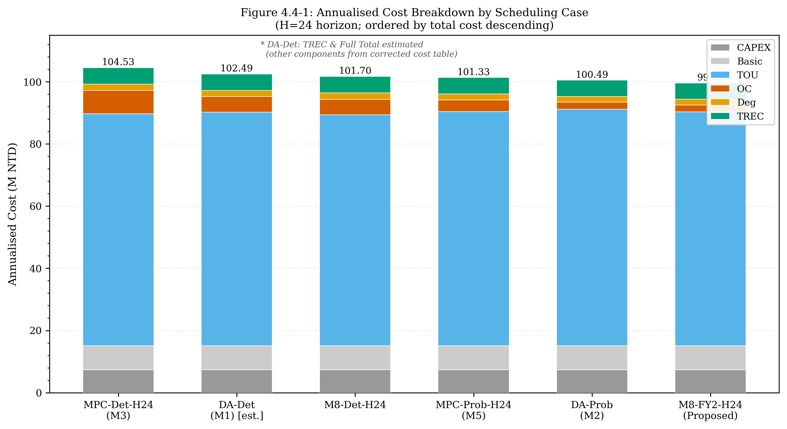
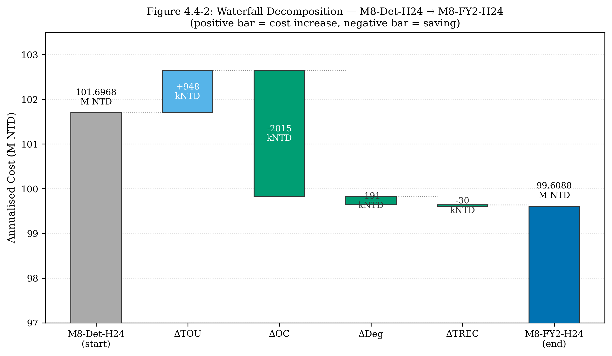
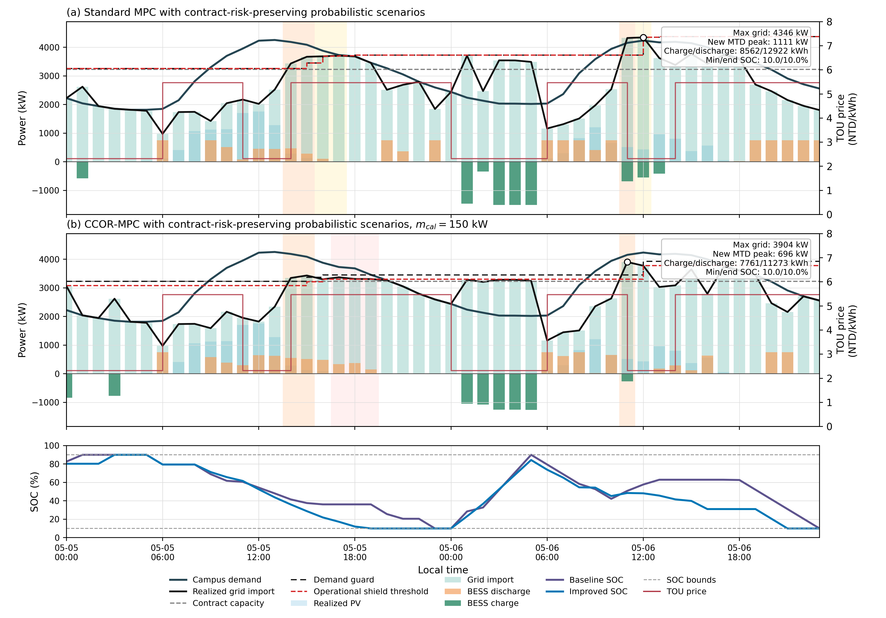

PV-Focused Rolling MPC and CCOR-MPC
Curated final package for a campus PV-BESS scheduling study. The final line evaluates deterministic and probabilistic PV information with standard rolling MPC and CCOR-v2 peak-certified control.
Final Cases
All cases use H24 rolling execution with first-step control.
Standard rolling MPC with q50 PV and deterministic load.
Stochastic rolling MPC using low-PV-safe K5 scenarios.
CCOR-v2 first-step peak shield with q50 PV.
CCOR-v2 plus probabilistic low-PV-safe K5 scenarios.
Annual Cost
Realized-basis total cost, M NTD.
Key Improvements
Negative values are reductions.
| Comparison | Total | OC/DCT | Peak |
|---|---|---|---|
| MPC_PROB vs MPC_DET | -2.043 | -2.265 | -323.575 |
| CCOR_PROB vs CCOR_DET | -2.265 | -2.679 | -282.265 |
| CCOR_PROB vs MPC_PROB | -0.939 | -1.201 | -114.701 |
Final Result Table
Cost in M NTD; peak in kW.
| Case | Total | TOU | OC/DCT | Deg. | Peak | OC Hours |
|---|---|---|---|---|---|---|
| MPC_DET | 106.486 | 75.557 | 7.239 | 2.147 | 5133.697 | 1021 |
| MPC_PROB | 104.442 | 75.877 | 4.974 | 2.048 | 4810.122 | 1007 |
| CCOR_DET | 105.768 | 75.642 | 6.452 | 2.126 | 4977.686 | 970 |
| CCOR_PROB | 103.503 | 76.217 | 3.773 | 1.971 | 4695.421 | 850 |
Method Flow
Final mainline only.
XGBoost quantile-style forecast with AgACI calibration.
PV = clip(PR * GHI / 1000 * PV_CAP).
PV scenarios plus deterministic given campus load.
Low-PV-safe tail-aware K-medoids, K=5.
H24 rolling MILP, execute first step.
Selected Figures
Included from the final thesis assets.
{kind=link}

{kind=link}

{kind=link}

Primary Files
Fast path for review.
Code Entrypoints
Final method scripts.